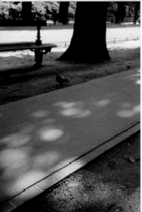
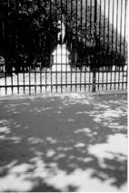
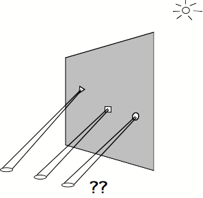
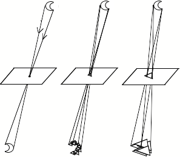
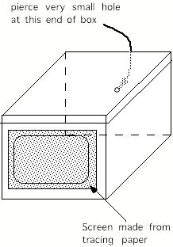
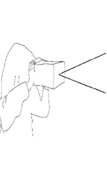

If on a summer's day you observe the spots of light cast on the ground by the sun shining through the leaves of a tree, you will notice that the smallest spots are all of oval shape. Why is this? Surely the spaces between the leaves must be quite irregular and cannot all be oval in shape! The surprising answer is that each oval spot is actually an image of the sun. The larger patches are combinations of many small images of the sun, so that the corners of the large patches are all rounded off by little ovals. If you are wearing a sweater with a fairly loose knit, you can observe a similar effect by putting your head under it and looking at the spots of sunlight projected on your shirt: they are all circular. A curious thing would happen if you were to look at the spots during an eclipse: the spots, instead of being circular, would all have the horned form of the partially eclipsed sun, and shadows under trees would have a horned or spiky quality.


Examples of spots of light under trees. The smallest spots are images of the sun. The sizes of the images are determined by the height above the ground of the gaps in the leaves. The photo on the left corresponds to tall trees, the photo on the right corresponds to smaller trees.
The principle at work here has been known at least since the time of Aristotle, who noted that light passing through a very small opening creates an upside down image of its source. When the foliage of the tree is sufficiently dense, the gaps are small enough, and each gap projects an image of the sun on the ground. The same principle is put to work in what is called the 'camera obscura'. .
As we saw in the case of the light shining through the leaves of a tree, the intriguing thing about the camera obscura is that, provided the aperture through which the light passes is small enough, its precise shape makes no dfference: A triangular or square opening will still project a circular image of the sun. In fact the phenomenon has a magical quality with which one can surprise one's friends, as explained in the diagram below.

A demonstration of the fact that the shape of the spot of light cast through a small aperture always oval, independently of the shape of the aperture¥ By cutting small triangular, square and other shaped holes about 1 mm across in a piece of card, and holding it up to the sun so that spots are projected on the ground, we see the same oval shape for all the spots. (It is best to do this with the rays of the sun shining down a long dark corridor, so that the images projected are large and bright).
The camera obscura remained a puzzle to thinkers throughout the middle ages. It took until the 17th Century before the Benedictine monk Francesco Maurolico[1] and the astronomer Johannes Kepler[2] finally explained its operation. The problem was that though there was much thought and debate on the nature of light[3], people did not generally accept the idea that each point of a bright object sends light rays in straight lines all around it. Only once you assume this does the explanation of the camera obscura become clear. As shown in the diagram below, what counts in determining whether the image looks like the shape of the source or the shape of the aperture is the relation between the sizes of the light source and the aperture. When the aperture is very small, you see an image of the source. As the aperture gets bigger you begin to see an image of the aperture.

The relation between aperture size and image shape: If the aperture is point-size, then only one ray from each point of the source (here the moon, shown above the apertures), passes through the opening to the screen, and an image of the source is projected below the aperture. But if you make the opening bigger, then instead of just a single ray, a number of rays can pass from each point of the source to the screen. For example, if the opening is triangular, then each point of the source projects a small triangle on the screen. Now instead of an image of the source composed of points, we have an image of the source composed of small triangles. If the size of the source is large compared to the size of the triangles, then we will still see a fairly good image of the source, and may not notice the small triangles at all. But if, as in the last sketch, the aperture is bigger still, and the projected triangles are larger than the image of the source itself, then we will see an image composed of slightly displaced large triangles, and this will look like just a single large, slightly blurry triangle.
To return to the summer's day under the tree: the small spaces between the leaves project images of the sun on the ground. The large spaces project the blurred images of the spaces between the leaves.
A related phenomenon concerns what happens when I close the blinds in my apartment on a sunny day. There are many small gaps in the blinds, and each gap projects an image of the outside scene. The superposition of all these scenes gives rise to a confused image of colored patches. When a brightly colored car passes by, I see a patches of the same color move in the opposite direction on the wall of my room.


Making a pinhole camera. Pierce a small hole (about 1 mm in diameter) in the middle of one end of a shoebox. At the other end of the box, cut a large window and fix a sheet of tracing paper over it, so as to form a screen like the ground glass screens found in old photographic cameras. You hold the box with the small hole facing a well lit scene, like a window, and you observe the upside-down image of the scene on the tracing paper screen. You immediately notice the main disadvantage of this primitive photographic camera: the image is very faint. To see the image it is thus a good idea to use a large black cloth to cover your head and the back of the box, just as photographers did in the past. You can also pull your sweater over your head to cover the end of the box.
It is instructive to make your own small-scale camera obscura with a shoebox, as described in the Figure above. This kind of reduced version of the camera obscura is called a pinhole camera and is the ancestor of today's photographic camera. As is the case for the camera obscura in general, the pin hole camera has the disadvantage that, in order for the image to be in good focus, the aperture must be very small. This has the consequence that very little light gets into the box and the image is extremely faint. Making the aperture larger brightens the image, but also unfortunately makes it more blurred. Thus, the pinhole camera has limitations. However it can be useful if what is required is not a precise image of the objects in the scene being examined, but simply their global color or their direction of movement. This information is available even if the aperture is made quite large. It is this information which may be used by the eyes of primitive animals like the horseshoe crab, to be considered in Chapter 6.
The Neapolitan polymath and playwrite Giovanni Battista della Porta (c. 1535 - 1615) was one person who did much to popularise the pinhole camera and actually proposed a modification that anticipated today's photographic cameras. Della Porta frequented the academies in Naples and wrote books on agriculture, physiognomy, demonology, magnetism, pneumatics, military fortifications and mathematics[4]. His Magia Naturalis ("Natural Magic",1558) was a very popular book, expanded into 20 volumes in the second (1589) edition. It was an almanach of tricks (e.g. how to arrange two mirrors to see multiple images of a thing, how to see deformed faces using convex mirrors, how to make people look like they have black faces or horse heads using candle wicks dipped in special preparations), recipes (how to make roses green, how to make fruit ripen sooner), and potions (how to change the color of children's eyes, how to make hair-removing potions) suitable for parlor amusements, with little scientific merit. Della Porta's parlor demonstrations and pronostications were evidently so successful that he was criticised of sorcery and of comuning with the devil, and had to defend himself before the Pope. The Accademia dei Segreti, which he founded, was banned by the Inquisition.
In the second edition of Magia Naturalis, Della Porta describes what he refers to as a 'great secret' which he reveals only as a special favor to his readers. It is a way to improve the functioning of the camera obscura: a convex lens is put over the hole[5]. Now the hole can be made larger and the image becomes brighter without getting blurred. Although with this discovery Della Porta had effectively put forward the very same principle as is used by the human eye (and also in the photographic camera), unfortunately for science he was more interested in the amusement value of his invention, and didn't attempt to understand what the mechanism was by which adding the lens improved his device. For this we had to wait for Kepler.
[1]Francesco Maurolico (1494-1575) lived in Messina in Sicily where he held several civil posts and became professor of Mathematics at the end of his life. In his posthumous Photismi de lumine et umbra (Naples, 1611) he gives a correct explanation of the principle of the camera obscura, and discusses the converging and diverging properties of convex and concave spectacle lenses. Lindberg (p. 178 ff) debates whether Maurolico rather than Kepler should be considered the first person to understand the functioning of the eye, but concludes that Maurolico did not understand the notion of 'image' formed by lenses, and that he did not conceive of the retina as receiving an image of the world. Maurolico, it seems, held to the classical notion that the crystalline humour was the organ of sight. In any event, Maurolico's works were unknown to Kepler.
[2]see below, for more on Kepler.
[3] Optics held an important role in natural philosophy. See Lindberg's account of the european faculties where optics was studied.
[4]Della Porta's major work on optics De refractione optices parte libri novem (1593), espouses the traditional perspectivist, intromissionist, viewpoint, according to Lindberg.
[5]Della Porta is usually credited with this idea, though others, such as Girolamo Cardano (1501-76) and Daniello Barbaro (1568 XXX), probably preceded him (acc to Enc. Britt)..